NeurIPS 2025
M3W: Learning and Planning Multiple Tasks via an MoE-based World Model
M3W · MoE-based Multi-Task World Model
1 School of Artificial Intelligence, University of Chinese Academy of Sciences
2 Institute of Automation, Chinese Academy of Sciences 3 Meituan
Abstract
Learn shared task dynamics. Plan task-specific actions.
Multi-task reinforcement learning aims to develop a single model capable of solving a diverse set of tasks. Existing methods often struggle with substantial variation in optimal policies across tasks. In contrast, many tasks exhibit bounded similarity in their underlying dynamics: high similarity within related task groups, but substantial differences between unrelated groups. We present M3W, which applies mixture-of-experts to a world model for both learning and planning. A SoftMoE dynamics model and a SparseMoE reward predictor support knowledge reuse across similar tasks while reducing conflicts across dissimilar tasks. An MPPI planner evaluates and optimizes actions through predicted rollouts. Experiments on 14 Bi-DexHands tasks and 24 MuJoCo tasks demonstrate improved performance, sample efficiency, and multi-task adaptability over policy-centric baselines.
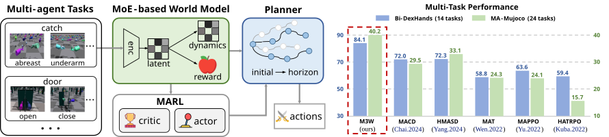
Method
One world model, multiple tasks.
M3W combines modular prediction with model predictive path integral (MPPI) planning.
Learn dynamics
SoftMoE models latent dynamics, reusing knowledge within groups of related tasks.
Predict rewards
SparseMoE predicts task rewards with selective expert activation to reduce interference.
Plan together
An MPPI planner optimizes joint actions using imagined world-model rollouts.

Results
Multi-task performance across manipulation and locomotion.
M3W is evaluated on Bi-DexHands and MuJoCo against policy-centric baselines.
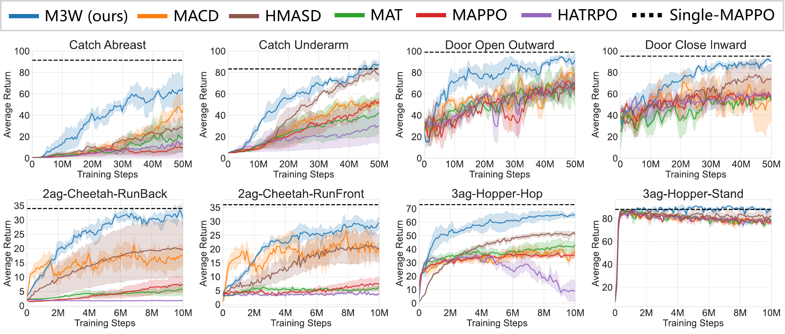
Task demonstrations
Behaviors learned by M3W.
Representative rollouts from dexterous manipulation and mujoco locomotion tasks.
Bi-DexHands
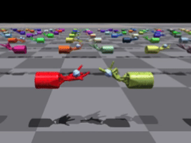
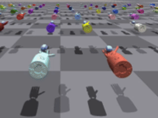
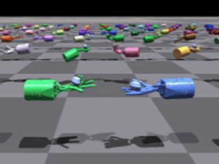
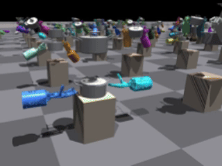
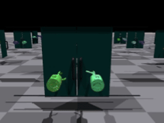
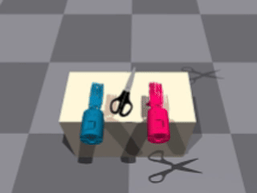
MuJoCo
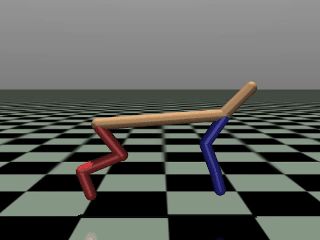
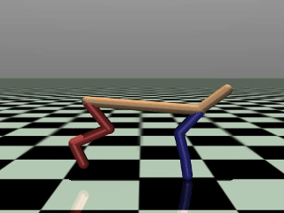
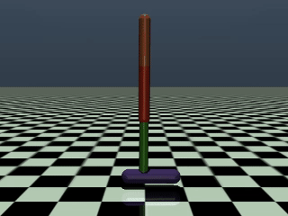
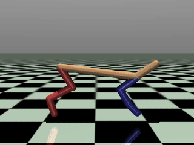
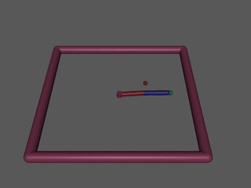
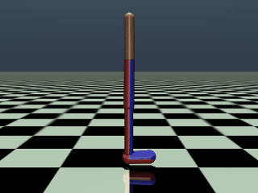
Citation
BibTeX
@inproceedings{zhao2025m3w,
title = {Learning and Planning Multi-Agent Tasks via an MoE-based World Model},
author = {Zhao, Zijie and Zhao, Zhongyue and Xu, Kaixuan and Fu, Yuqian and Chai, Jiajun and Zhu, Yuanheng and Zhao, Dongbin},
booktitle = {Advances in Neural Information Processing Systems},
year = {2025},
url = {https://openreview.net/forum?id=fi24ry0BX5}
}